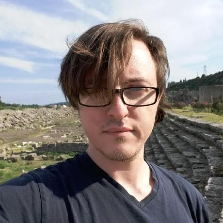
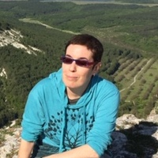
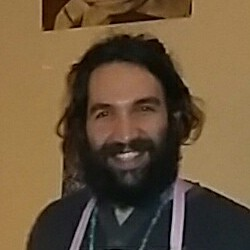
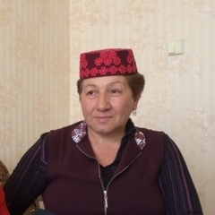

A biscriptual morphological transducer for Crimean Tatar
Francis M. Tyers¹ · Jonathan North Washington² · Darya Kavitskaya³
Memduh Gökırmak⁴ · Nick Howell⁵ · Remziye Berberova⁶
- Indiana University, Высшая Школа Экономики
- Swarthmore College
- University of California, Berkeley
- Univerzita Karlova in Prague
- Высшая Школа Экономики
- Crimean Tavrida University (emerita)
Overview
- We present a biscriptual morphological transducer for Crimean Tatar
- A morphological transducer maps between form and analysis:
köyünde ↔ köyn px3sp loc - This transducer supports both orthographies, Cyrillic and Latin:
köyünde ↔ köyn px3sp loc
коюнде ↔ köyn px3sp loc - Free / Open Source, https://github.com/apertium/apertium-crh
- Roadmap:
- Context and Background
- Methodology and Issues
- Evaluation and Results
- Concluding remarks
Background: Crimean Tatar
Cyrillic: Къырымгъа хош келдинъиз!
Latin: Qırımğa hoş keldiñiz!

- Understudied NW Turkic language
- Influence from Oghuz / SW Turkic
- Forcible resettlement by Soviet government in 1944
- To Central Asia, mostly Uzbekistan
- Hence some influence from SE Turkic (Uzbek)
- 288k speakers have returned to Crimea
- 313k still in diaspora
- Almost all speakers bi- or trilingual
(Russian & language of surrounding community) - Transmission to younger generations in flux
- Two current normative orthographies:
- Cyrillic: based on Russian orthography
- Latin: based on Turkish orthography
- Not particularly similar to (Kazan) Tatar; both NW Turkic
- Kypchak / NW Turkic:
- crh - Crimean Tatar
- uum - Urum
- krc - Karachay/Balqar
- nog - Noghay
- kum - Kumyk
- kaz - Kazakh
- Oghuz / SW Turkic:
- gag - Gagauz
- tur - Turkish
- azj - Northern Azeri
- azb - Southern Azeri
Background: Orthographic Systems
| b | б |
| c | дж |
| ç | ч |
| d | д |
| f | ф |
| g | г |
| ğ | гъ |
| h | х |
| j | ж |
| k | к |
| l | л |
| m | м |
| n | н |
| ñ | нъ |
| p | п |
| q | къ |
| r | р |
| s | с |
| t | т |
| v | в |
| y | й |
| z | з |
| a | а, я | |
| â | я | |
| ı | ы | |
| o | о, ё | |
| u | у, ю | |
| e | э, е | |
| i | и | |
| ö | о, ё | |
| ü | у, ю |
- Latin orthography:
- 31 characters
- each phoneme a distinct character
- digraphs only for foreign sounds
- Russian words can be treated as adapted to phonology or not:
bücet / *byudjet for бюджетbudget
konki for коньки [kɐnʲˈkʲi]skates - Cyrillic orthography:
- 33 characters of Russian alphabet
- 4 digraphs:
дж [ʤ],гъ [ʁ],къ [q],нъ [ŋ] - Russian words are spelled as in Russian:
бюджет budget ,коньки skates
[y] and [ø] in Cyrillic
у andо : _ C {и, е, ё, ю}, often in σ1
учюнджи [yʧ-ynʤi]third
кунюнде [kyn-yn-de]on the day of
болип [bøl-ip]having decided
муче [myʧe]body part у andо : _ Cь ~ _ {к, г}, often in σ1 before coda C
учь [yʧ]three
куньлери [kyn-ler-i]days of
кок [køk]sky
букти [byk-ti]s/he/it bent ю andё : in σ other than σ1
юзю [jyz-y]his/her face
тёксюн [tøk-syn]let it spill
мумкюн [mymkyn]possible
ю andё : C _ for some C in σ1
тюшти [tyʃ-ti]fell
дёрт [dørt]four
чёпке [ʧøp-ke]to the rubbish
- Can be idiosyncratic:
козь [køz]eye
сёз [søz]word корь [kør]see
кёр [kør]blind юзь [jyz]face
юз [jyz]hundred ё andю in principle ambiguous
ют [jut]swallow
юз [jyz]hundred
(actually ambiguous examples difficult to identify)- [j] represented by either
й orя /е /ю /ё :
къой [qoj]put
къоюл [qoj-ul]be put
- ∴ many-to-many mapping of
ю &ё
Background: Prior work
- Other FOSS Turkic transducers with good (≥90%) coverage:
- Kypchak: Kyrgyz, Kazakh, Tatar, Kumyk
- Also: Turkish, Tuvan
- Altıntaş and Çiçekli closed source transducer
- Lexicon was eventually obtained as open source
- Several thousand new stems
- We've been incorporating (categorising) them gradually
- Morphotactics adapted from Kazakh transducer
- Nominal morphotactics almost identical
- Verbal morphotactis rather different
The team

Fran
Computational Linguist,
background in Turkic
Fran
Computational Linguist,
background in Turkic

Jonathan
Linguist & Turkologist,
background in Comp Ling

Dasha
Linguist, works with Crimean Tatar community
Dasha
Linguist, works with Crimean Tatar community

Memduh
Computational Linguist,
Turkish speaker

Nick
Mathematician,
background in Comp Ling
Nick
Mathematician,
background in Comp Ling

Remziye
Crimean Tatar speaker & Linguist
Remziye
Crimean Tatar speaker & Linguist
Methodology: Workflow
- Primary development (in consultation with Dasha)
- Fran - morphotactics, lexicon, moprhophonology, transliterator
- Jonathan - morphophonology, morphotactics, transliterator
- Memduh - lexicon, morphotactics
- Annotation for evaluation
- Remziye - Annotated each form with prose explanations
- Dasha - Converted Remziye's annotations to our tagset
- Jonathan - Cleaned up annotations, merged sections
- Additional support:
- Nick - stricter evaluation, reproducibility control
Methodology: Morphotactics
maps köy
Methodology: Morphophonology
maps köy>
Methodology: Lexicon
| Part of speech | № stems |
|---|---|
| Noun | 6,271 |
| Proper noun | 4,123 |
| Adjective | 1,438 |
| Verb | 1,007 |
| Adverb | 87 |
| Numeral | 40 |
| Pronoun | 31 |
| Postposition | 21 |
| Conjunction | 20 |
| Determiner | 16 |
| Total: | 13,054 |
Methodology: Transliterator
lexcandtwolto propose/constrain transliterations to Cyrillic- Choose correct transliteration based on empirical evidence
- Favorable weights to forms seen in corpora
- Weights based on (up-to-)n-grams
Evaluation: Coverage
| Corpus | Orthography | Tokens | Coverage | Ambiguity |
|---|---|---|---|---|
| IBT | Cyrillic | 217,611 | 90.0% | 1.79 |
| Wiki | Latin | 164,881 | 92.5% | 1.94 |
| News | Latin | 1,745,826 | 93.2% | 2.07 |
Evaluation: Error Model
Evaluation: Transducer accuracy
| Precision | Recall | F-score |
|---|---|---|
| 94.98 | 81.32 | 87.62 |
Evaluation: Transliterator accuracy
| Method | States | Precision | Recall | F-score |
|---|---|---|---|---|
| — | 114 | 53.0 | 98.4 | 68.9 |
| 1-gram | 2,030 | 93.4 | 93.5 | 93.5 |
| 2-gram | 17,382 | 94.1 | 94.2 | 94.1 |
| 3-gram | 99,761 | 94.0 | 94.1 | 94.1 |
| 4-gram | 290,201 | 94.4 | 94.6 | 94.5 |
| 5-gram | 577,926 | 95.1 | 95.2 | 95.2 |
| 6-gram | 924,719 | 95.5 | 95.6 | 95.5 |
| 7-gram | 1,282,917 | 95.4 | 95.6 | 95.0 |
Future work
Sağ oluñız / Сагъ олунъыз
Special thanks to:
- Google's Summer of Code program
- Swarthmore College Research Fund
- the Apertium open source community
- several anonymous reviewers